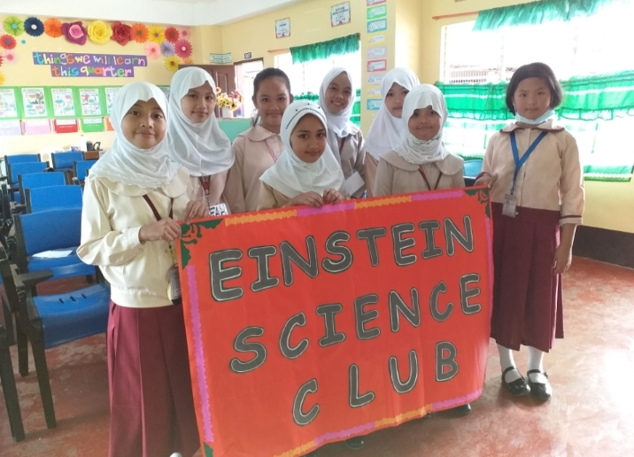

HOME |
PERSONAL DATA |
EDUCATIONAL BACKGROUND |
HOBBIES |
OTHERS |
ORGANIZATION AND OTHER ACTVITIES:

The name of our science club is Einstein Science Club
The Science Club is a mentor based science program for both elementary and highschools
the club offers more than facts about science, and it also gives the opportunity to develop an
undestanding of the world. Science itself is fascinating and the club will help us to expand our knowledge.
Other Activities
Work of eARTh
This activity is very fun because our teacher taught us how to paint using
different kinds of techniques, at the same time we painted recycle plastic bottles
and made it as a flower pot. We did learn and enjoy making art at the same time we did help our mother nature.